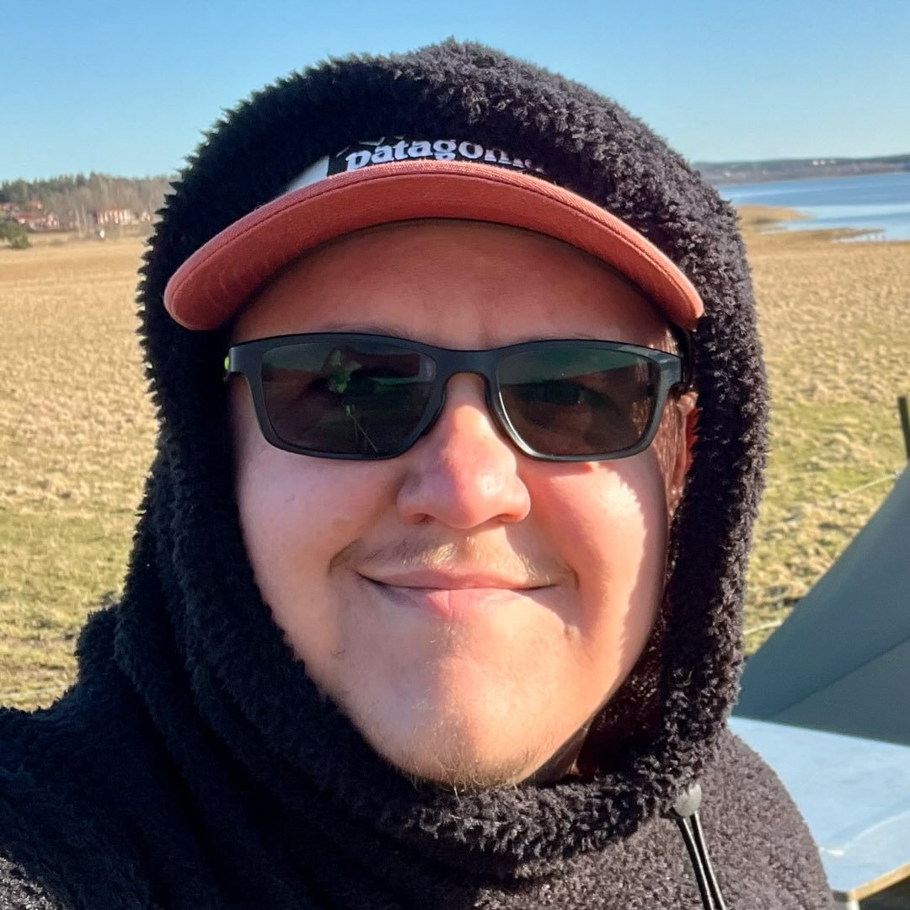

Jämtlandsfjällen 2026
En veckolång fjällvandring från Ramundberget till Storulvån. Med bara start och mål givna får resten av resan formas av vädret, terrängen och det som känns rätt för stunden.
Visa vandringen →
Följ mina vandringar och fjälläventyr runt om i Sverige.
En veckolång fjällvandring från Ramundberget till Storulvån. Med bara start och mål givna får resten av resan formas av vädret, terrängen och det som känns rätt för stunden.
Visa vandringen →Under maj 2026 vandrade jag hela Sörmlandsleden, från etapp 62 till 1. Här finns dagliga uppdateringar, utrustning och bilder.
Visa vandringen →